Book of Giants · Qumran Cave 4
Physical manuscript
The Dead Sea Scrolls · Qumran
The Book of Giants
A Living Investigation
The manuscripts are real.The story is fragmentary.
Ancient fragments of a lost story about giants survived among the Dead Sea Scrolls. Some words can still be read. Others have been reconstructed by scholars. This investigation separates what survives from what has been restored, interpreted—and reconstructed for our films.
Examine the manuscriptsThe receipt · Dead Sea Scrolls
This ancient book really exists.

Physical manuscript record4Q5304Q EnGiantsb
Official archive record: Plate 437 · B-284596 · scanned infrared negative · recto.
View the genuine photograph at the IAA archive ↗ The IAA image is linked, not reproduced here, pending explicit public-display permission.What it proves
Ancient manuscript fragments belonging to a work scholars identify as the Book of Giants physically survive among the Dead Sea Scrolls.
What it doesn't prove
The surviving manuscripts do not establish that giants historically existed or that the supernatural events narrated in the ancient story occurred.
A surviving fragment is not a complete story.
How to read this investigation
Five levels. Five different claims.

- 1
Ancient ink
What physically survives on the manuscript.
- 2
Readable text
Letters and words that can be read with sufficient confidence.
- 3
[Restored text]
Missing or damaged material supplied by editors.
- 4
Scholarly interpretation
What researchers conclude the incomplete evidence may mean.
- 5
Artist reconstruction
What Ancient Mysteries Rediscovered visualizes in order to transform the surviving narrative into cinema.
We will never present all five as the same thing.

The Book of Giants · Chapter I
Ohyah
A giant dreamed that judgment was coming.
From the surviving Aramaic Dead Sea Scrolls
Two giant brothers, Hahyah and Ohyah, receive disturbing dreams. Ohyah's vision carries him into a heavenly judgment scene: the Ruler of Heaven descends, thrones are established, books are opened and judgment is pronounced. The giants are terrified—and send Mahaway to seek an interpretation from Enoch.
The manuscript behind the story
4Q530 · Ohyah's dream

The sequence below is a cautious paraphrase of the episode described in specialist scholarship. It is not a transcription of the concept artwork.
- 01The Ruler of Heaven descendsReadable text / scholarly translation
- 02Thrones are establishedReadable text / scholarly translation
- 03The Great Holy One takes his seatPartly restored text
- 04The books are openedScholarly interpretation of fragmentary text
- 05Judgment is pronouncedJudgment context; object not overstated
Evidence boundary
The wider narrative concerns the giants and judgment. This display does not rewrite the damaged dream passage as the more explicit claim “judgment was pronounced against the giants.”
Compare the 4Q530 manuscript profile ↗Investigation pause
Who was being judged?
The manuscript gives us a heavenly court.
Books are opened.
Judgment is pronounced.
But the surviving fragment does not hand us a perfectly preserved modern explanation of every element in Ohyah's dream.
So look at what happens next.The giants' response
The giants were afraid.
Textual evidenceThey needed someone who could explain it.
Enoch
In the Book of Giants tradition, Enoch is the figure the giants turn to for interpretation.
Mahaway
The surviving narrative describes Mahaway being sent to seek Enoch. It does not preserve a literal gathering of kneeling giants before him.

Watch the story
Story vs evidence
Artist reconstructionThe film turns a damaged narrative into one continuous encounter. The audit keeps its choices separate from what the manuscripts support.
Watch the Ohyah Reel ↗Qumran & the manuscripts
A fragment enters the modern record.

4Q530 · 4Q EnGiantsb
The Israel Antiquities Authority catalogues Plate 437, B-284596 as a recto image of manuscript 4Q530, identified as 4Q EnGiantsb.
Scanned infrared negative
The archive records the plate as photographed by Najib Anton Albina in June 1960. That is the image date, not a claim about when the fragments were discovered.
Aramaic and fragmentary
Specialist manuscript profiles identify 4Q530 as one of the better-preserved Book of Giants witnesses, while stressing that its surviving text remains incomplete.
The question that survives
The giants sent for Enoch.
What did Enoch tell them?
The giants sought an interpretation. Only fragments of the answer survive.
Part of his answer survived.Continue to Chapter II →
The Book of Giants · Chapter II
Enoch's Answer
The giants needed a human's help.
From the surviving Aramaic Dead Sea Scrolls
After Ohyah and Hahyah report disturbing dreams, the giants become afraid. The surviving Aramaic Book of Giants material describes Mahaway being sent to Enoch to seek an interpretation.
Did the ancient text really say that the giants turned to Enoch for help?
Follow the evidence
Chapter II investigation
Part of Enoch's answer survived.
Artist reconstructionThe artwork introduces the next question; it does not answer it. The evidence comes from verified 4Q530 and 4Q203 records and from critical scholarship presented separately below.
Generated markings are never extracted, identified, or quoted as evidence.

The journey receipt · 4Q530
They sent Mahaway to Enoch.
4Q530Book of Giants · Qumran Cave 4
What the text supports
- Ohyah and Hahyah report troubling dreams.
- The giants become afraid.
- Mahaway is summoned and sent.
- His destination is Enoch.
- The purpose is to obtain an interpretation of the dreams.
This is a conservative narrative summary of fragmentary material—not a fabricated quotation or uninterrupted transcription.
Examine the primary source ↗Israel Antiquities Authority · Dead Sea Scrolls Digital LibraryThe investigation advances
The giants had sent their messenger.
But did Enoch answer?
4Q203 preserves part of the response.
Enoch's answer receipt · 4Q203 Fragment 8
Part of his answer survived.
4Q203 Fragment 8 preserves material associated with a second tablet or letter connected with Enoch. It addresses the Watchers and refers to deeds and corruption involving them and their offspring.
The fragment is damaged. Portions of its destruction and judgment language have been editorially reconstructed by scholars; brackets in critical readings must not be silently removed.
Scholars understand Enoch's message as announcing condemnation, punishment, or destruction involving the Watchers and giants. The complete interpretation of Ohyah's dream does not survive intact.
The companion Reel turns this fragmentary textual material into a continuous dramatic encounter. Its dialogue and physical staging are not presented as a verbatim translation.
Record mapping: the IAA labels B-295415 “Plate 906, Frag 4” and identifies it as 4Q203. Marro's critical edition maps that imaged object to manuscript fragment 8.
Examine the primary source ↗Israel Antiquities Authority · Dead Sea Scrolls Digital LibraryA surviving fragment is not a complete speech.
The existence of an ancient manuscript establishes the existence of the ancient story—not the historical occurrence of its supernatural events.
Chapter II · Story vs evidence
What the film shows. What the text supports.
The cinematic dialogue is not a verbatim translation of 4Q203.
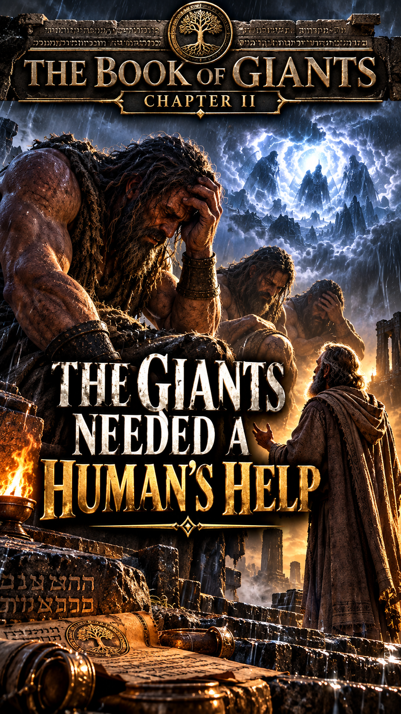
Watch the story · Chapter II
The giants needed a human's help.
Artist reconstructionThe Reel dramatizes Mahaway's mission and Enoch's fragmentary response while the investigation keeps the evidence boundaries visible.
Watch Chapter II ↗Where the investigation now stands
What the evidence supports—and what it does not.
Supported by the ancient textual tradition
- The Book of Giants existed in antiquity.
- Ohyah is named in the surviving material.
- Ohyah and Hahyah experience disturbing dreams.
- The giants react with fear.
- Mahaway is sent to Enoch seeking interpretation.
- Enoch is associated with a written response or tablet.
- Surviving material concerns the deeds and corruption of the Watchers and giant offspring.
- Judgment, punishment, or destruction forms part of the surviving and reconstructed textual context.
Some wording in the damaged passages depends on scholarly restoration and must remain labeled as such.
Not established
- The exact appearance or height of Ohyah or Mahaway.
- The exact appearance of Enoch.
- The precise physical setting of their encounters.
- That the assembled giants physically stood or knelt before Enoch.
- Exact continuous dialogue used in the cinematic reconstruction.
- The historical occurrence of the supernatural events described by the ancient story.
The existence of an ancient manuscript establishes the existence of the ancient story—not the historical occurrence of its supernatural events.

The question beyond Chapter II
What did the giants do after Enoch warned them?
They had their answer. But their story wasn't over.
Continue to Chapter III ↓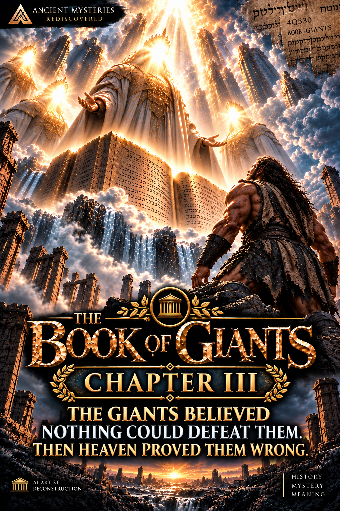
The Book of Giants — Chapter III Investigation
Did the giants really pray for mercy?
They were told to pray. But the verdict had already been given.
So what was the prayer for?
The Reel shows the giants confronting judgment. But the surviving Aramaic fragments complicate the story. One damaged passage from 4Q203 preserves a command translated “…and pray.”
That sounds like an answer. It isn't.
Before asking whether the giants prayed for mercy, we first have to determine who was actually being told to pray.
Evidence plate 1 · The receipt
The command survives.
Direct textual evidence4Q203 is an Aramaic manuscript of the Book of Giants from Qumran Cave 4. Fragment 8, line 15 preserves the plural command commonly translated “…and pray.”
The command to pray really is part of the surviving textual evidence.
But the command is not securely addressed to Ohyah, Hahyah, or the giant offspring. The textual context associates it with Shemihazah and his fellow Watchers.
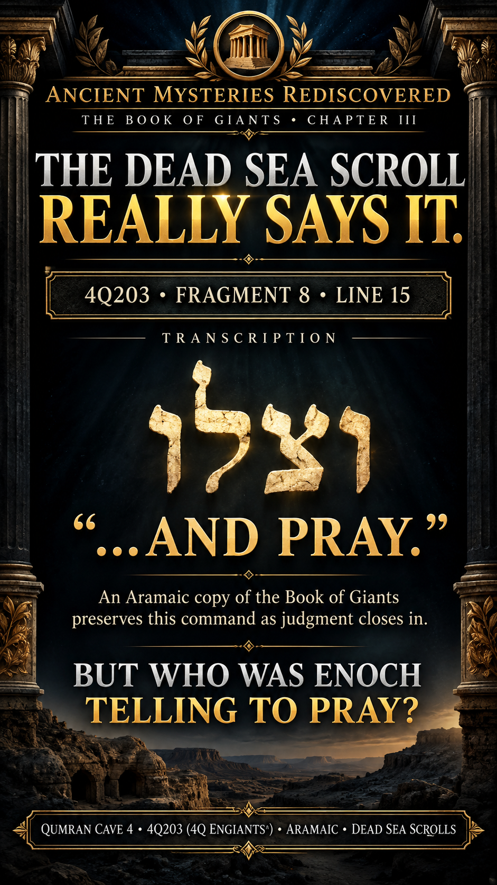
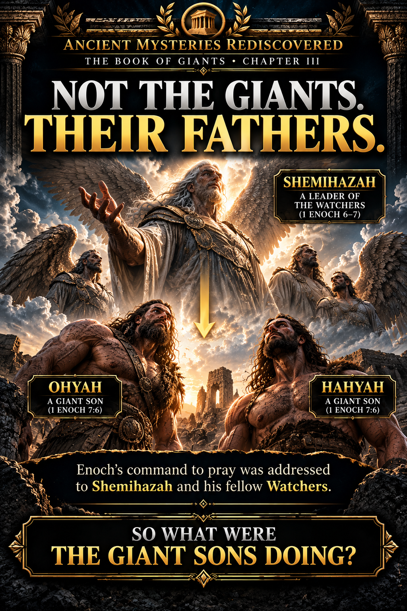
Evidence plate 2 · The correction
Not the giants. Their fathers.
The Watchers are the heavenly beings who descended and fathered the giant offspring in the Enochic tradition. Shemihazah is associated with the Watchers. Ohyah and Hahyah belong to the next generation: the giant sons.
WatchersHeavenly fathers
↓Giant sonsThe next generation
Textual / Enochic traditionShemihazah → Ohyah / Hahyah
Watchers and giants are related. They are not the same category of being.
If the command to pray concerns the fathers, what were the giant sons doing while judgment closed in?
Evidence plate 3 · Fear
The giants saw their end coming.
Textual evidence · fragmentary contextThe surviving Book of Giants fragments portray Hahyah and Ohyah receiving frightening dreams or visions. Their meaning points toward destruction and judgment, although damaged wording and editorial reconstruction must remain visible.
No surviving dream proves that the giants prayed, and the gaps do not license invented dialogue.
The giants now know something is wrong.
Their physical scale has not changed.Their confidence has.
But fear alone did not make these beings powerless. The text remembers just how powerful they believed themselves to be.
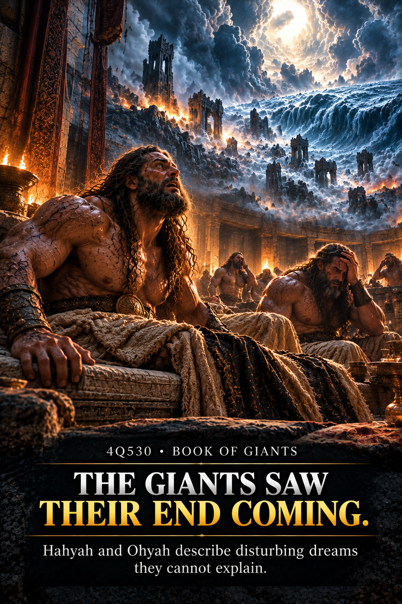
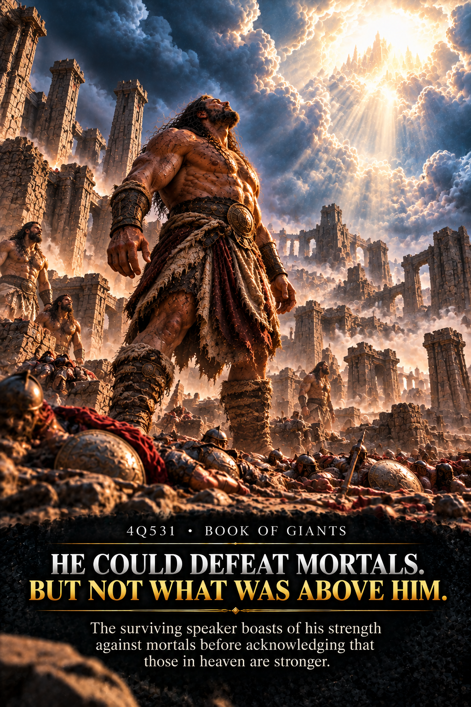
Evidence plate 4 · The limit of strength
He could defeat mortals. But not what was above him.
4Q531 · first-person boastA surviving first-person speaker boasts of extraordinary strength against mortal opponents, then acknowledges that heavenly opponents are stronger.
This boast should not be assigned to Ohyah. The text subsequently shifts to “Then Ohyah said to him…,” which makes the preceding voice someone else. Matthew Goff, following a proposal by Émile Puech, associated that speaker with Gilgamesh; Stuckenbruck left the identity unresolved. Gilgamesh therefore remains a scholarly reconstruction, not secure manuscript wording.
Mortals could be overpowered. Heaven could not.
They hadn't lost their strength.They had discovered its limit.
Once strength could no longer solve the problem, the story turns toward someone physically insignificant by comparison. A human. Enoch.
Evidence plate 5 · Related Enochic tradition
Angels needed a human to speak for them.
Related Enochic tradition — 1 Enoch 12–16
In the Book of Watchers, the condemned Watchers ask the human Enoch to prepare and carry their petition. Their appeal concerns forgiveness and their fate, with their offspring implicated in the consequences of judgment. The divine verdict is not reversed.
Book of Giants
Separately, the giants seek Enoch's knowledge or interpretation, with Mahaway functioning as messenger in the surviving narrative. These are related traditions, not the same surviving scene.
Heaven → Enoch → WatchersWatchers → Enoch → HeavenGiants → Mahaway → Enoch
The Watchers came down from heaven.Enoch was taken up.The beings who came from heaven needed a human who could reach it.
Interpretive framing: Angels were supposed to speak for humans. These angels needed a human to speak for them.
But one final piece of evidence makes the original question harder to answer. Because a prayer actually survives.
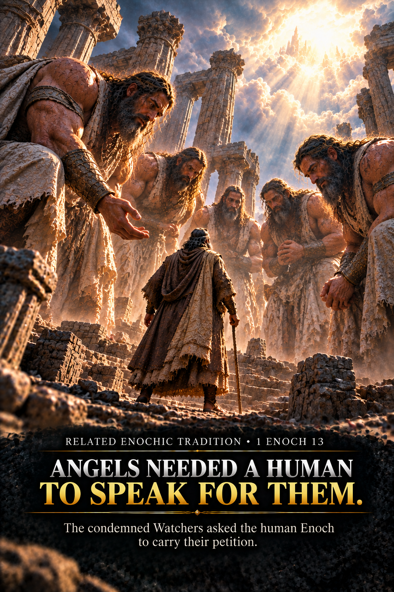
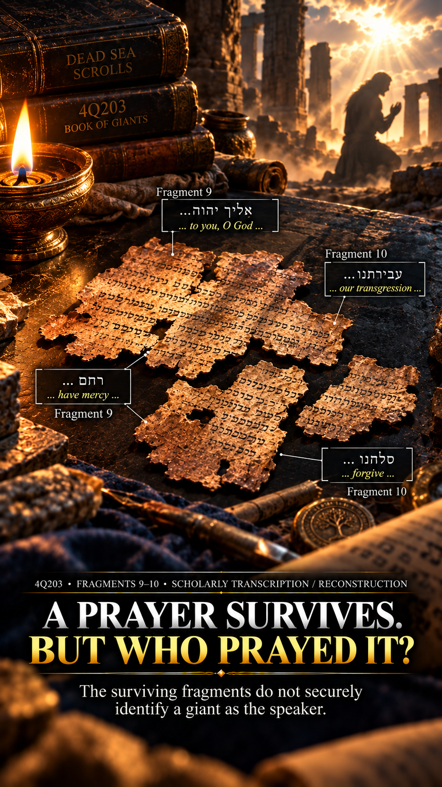
Evidence plate 6 · The unsolved prayer
A prayer survives. But who prayed it?
Textual evidence · speaker disputed4Q203 Fragments 9–10 contain prayer language addressed to God. The identity of the speaker, however, is a textual and scholarly problem.
The fragments do not securely identify Ohyah, Hahyah, or an unnamed giant as the speaker. Marro's 2026 critical edition discusses the material in connection with Enoch's intercessory role; Stuckenbruck's earlier commentary leaves the speaker and placement unresolved. The fragmentary state and the history of arrangement must remain visible.
- A command to pray survives.
- A prayer survives.
- Fear and distress survive.
- The giants seek Enoch.
- Bowing and weeping language survives elsewhere in 4Q203.
No surviving Qumran passage securely says “Ohyah prayed for mercy.”
Investigation verdict
So—did the giants really pray for mercy?
The surviving fragments don't tell us for certain.
The Book of Giants preserves fear, approaching judgment, appeals to Enoch, humbling imagery, a command to pray, and surviving prayer material. What it does not securely preserve is a passage identifying Ohyah—or another named giant—as the speaker of a prayer for mercy.
The possibility is present.The identification is not.
Absence of proof is not proof that no giant ever prayed. Fragmentary prayer material is not proof that one did.
Human meaning
They hadn't lost their strength.They had lost their standing.
The Book of Giants does not become interesting because enormous beings suddenly become physically weak. It becomes interesting because physical power stops mattering.
Dreams reveal what strength cannot prevent. Judgment establishes a boundary they cannot cross. And beings who once dominated mortals are left seeking answers from a human scribe.
Evidence ledger
What the record can—and cannot—carry.
| Claim | Evidence status |
|---|---|
| 4Q203 preserves a command translated “…and pray.” | Direct textual evidence |
| The command is associated with Shemihazah and fellow Watchers rather than securely with the giant sons. | Textual context / reconstruction |
| Ohyah and Hahyah belong to the giant generation associated with Shemihazah. | Textual / Enochic tradition |
| Giants experience frightening dreams connected with impending destruction. | Direct textual evidence, with fragmentary context |
| Bowing and weeping language survives in 4Q203. | Direct wording; surrounding context damaged |
| Watchers ask Enoch to carry or intercede with a petition. | |
| Giants seek Enoch for interpretation or help. | Book of Giants textual evidence |
| Prayer material survives in 4Q203 Fragments 9–10. | Textual evidence; speaker and reconstruction require care |
| Ohyah personally prayed for mercy. | Not established |
| These literary events occurred historically. | Not established by the manuscripts |
Watch the story · Chapter III
The giants believed nothing could defeat them.
Artist reconstructionThe Reel dramatizes the moment physical power meets a judgment it cannot overcome. The investigation above keeps that cinematic story separate from what the manuscripts securely establish.
Watch Chapter III ↗Ancient Mysteries Rediscovered
The Watchers asked for mercy.
The giants learned their fate.
What happened when judgment finally came?
Beyond Chapter III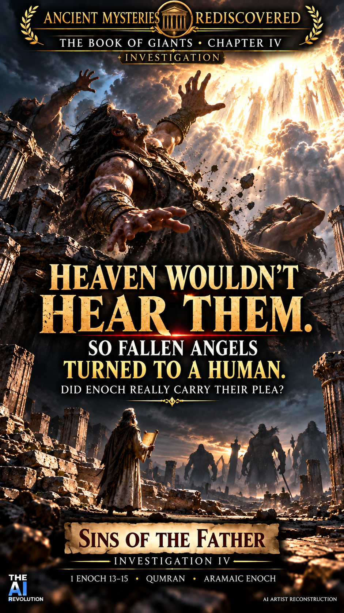
Ancient Mysteries Rediscovered · Manuscript Investigation
The Book of Giants · Chapter IV
Sins of the Father
Did fallen angels really ask a human to speak for them?
Ancient writings preserve a remarkable reversal. Heavenly beings descended to earth, took human wives, and fathered children remembered as giants. But when judgment approached, these powerful beings could not save themselves—or their sons.
They turned to a human. His name was Enoch.
“You should intercede for men, and not men for you.”
1 Enoch 15:2 · R. H. Charles translation
Why would beings from Heaven need a human to speak for them?
Follow the evidence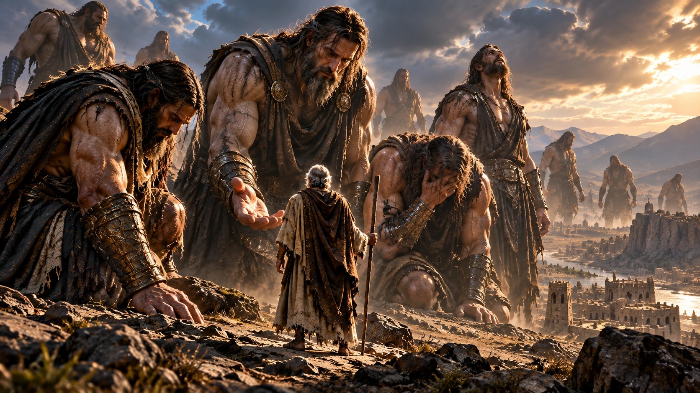
Section 01 · Investigation entrance
The beings from Heaven needed a human.
The Watchers asked Enoch to carry their plea. Their giant sons would later seek his interpretation. The same human stands at the center of two different requests—and one approaching judgment.
Movement I
The Fathers
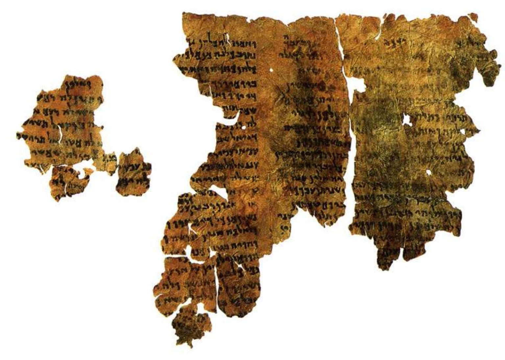
Section 02 · Before the giants
4Q201 · 4Q Enocha
Aramaic · Qumran Cave 4
c. 200–150 BCE
The story of Enoch survived in Aramaic.
Fragments of ancient Aramaic copies of Enoch recovered at Qumran provide physical evidence that Enochic writings circulated during the Second Temple period.
Evidence boundary: this photograph establishes the survival of 4Q201. We do not claim that this exact pictured fragment preserves the Watchers' petition.
- Ancient inkPhysical marks on parchment.
- Readable textLetters scholars can identify.
- Restored textMaterial supplied within gaps.
- InterpretationArguments built from incomplete evidence.
Section 03 · 1 Enoch 13
The fallen angels needed a human's help.
According to 1 Enoch 13, the Watchers knew judgment was approaching. Afraid and unable to present their own petition, they asked Enoch to write and carry their plea for forgiveness.
A human had become their intermediary.
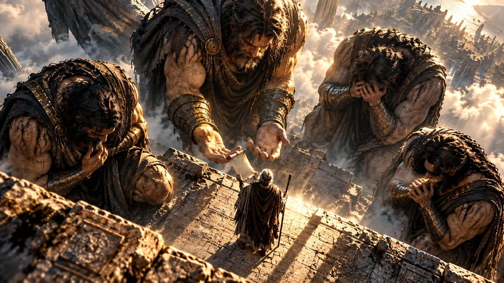
Section 04 · 1 Enoch 15:2 · R. H. Charles translation
You should intercede for men.Not men for you.
The Watchers wanted Enoch to speak for them. Instead, Enoch returned with judgment. Their petition had failed.
Movement II · Source transition
The Sons
We now move from the Book of Watchers in 1 Enoch to another ancient work preserved among the Dead Sea Scrolls: the Book of Giants. They are related traditions—not one continuous surviving manuscript.
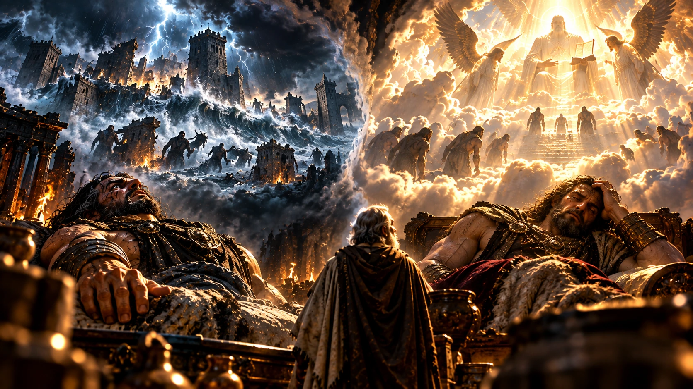
Section 05 · 4Q530 · Fragmentary Aramaic text
Two giants dreamed. Both saw their end.
Catastrophe
Fragmentary imagery has been read in connection with growth or a garden and catastrophic destruction involving water and fire. Damaged wording requires reconstruction.
Judgment
His dream contains ominous heavenly judgment imagery: authority, opened books, and a written verdict emerge through fragmentary text and editorial restoration.
One saw destruction. The other saw judgment.
Survives Dream elements.Restored Damaged wording.Interpreted Symbols and sequence.
Section 06 · The interpretive turn
The giants had seen their end. They did not understand what they had seen.
So they turned to Enoch.
The Watchers needed Enochto speak for them.
Their sons needed Enochto explain what they had seen.
Same human. Different request.
Within the dream cycle, Enoch functions as the human interpreter and scribe sought for meaning. “Scribe of interpretation” is our descriptive label for that narrative role, not a quotation from surviving ink.
Section 07 · Find Enoch
The giants sent one of their own.
His name was Mahaway.
The fragmentary Book of Giants material sends Mahaway in connection with obtaining Enoch's interpretation. The journey text is damaged, and scholarship reconstructs extraordinary eagle-like or whirlwind movement.
- Ancient ink
- Mahaway is sent in connection with seeking Enoch and an interpretation.
- Restored text
- Parts of the journey description are damaged.
- Interpretation
- Flight and eagle-like imagery depend on reconstruction and reading.
- Unknown
- The route and full mechanics of the journey.
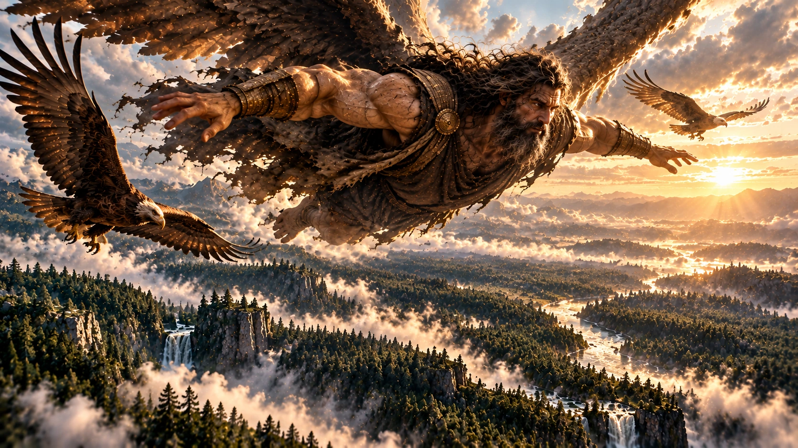
Movement III
Sins of the Father
Section 08 · 4Q203 · Book of Giants
Enoch didn't tell them how to escape. He warned them what was coming.
The surviving material is fragmentary but turns toward corruption, approaching destruction, and the recipients' response.
Pray.
An instruction involving prayer survives.
The wording immediately before it is incomplete.
Different reconstructions have been proposed.
We don't fill the missing words with the version that makes the best story.
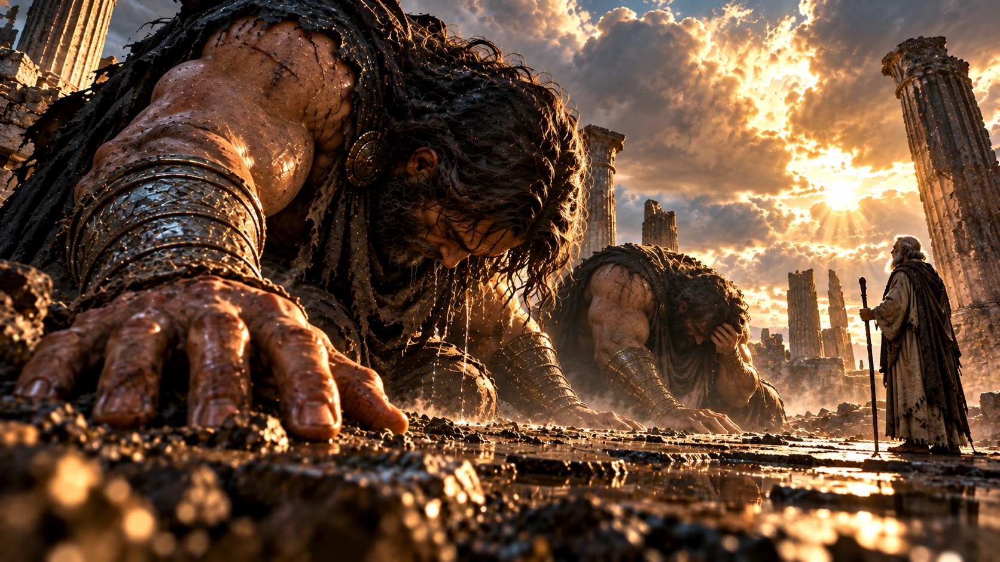
Section 09 · 4Q203 · Fragmentary text
The giants bowed. And wept.
Fragmentary material associated with Ohyah and Hahyah has been interpreted as showing the brothers bowing or prostrating themselves and weeping before Enoch.
Was this repentance?
Possibly.
The surviving evidence is too fragmentary to turn that possibility into certainty.
Section 10 · The central contradiction
Sins of the Father
The Watchers crossed the boundary, took human women, and produced the giant offspring within the Enochic narrative.
Were the giants simply being punished for their fathers' sins?
Not only.
The giants are not portrayed merely as innocent children punished for their fathers. They become violent participants in the corruption of the earth.
The Watchers created the crisis.Their sons continued it.
The fathers created what their sons became.
Section 11 · Judgment
The fathers couldn't save them.
The Watchers had asked Enoch for mercy. But their sons would still be destroyed. The beings who descended from Heaven now faced a punishment they could not prevent.
They asked Enoch to save their sons.
Now they could only watch.
Movement IV
The Giants Died.
But death didn't end their story.
Section 12 · 1 Enoch 15–16 · Enochic tradition
Something remained.
The giants have an unusual origin in the story: heavenly spirits and human flesh. After their physical deaths, 1 Enoch claims that evil spirits proceeded from their bodies.
“Evil spirits have proceeded from their bodies.”
1 Enoch 15:9 · R. H. Charles translation
The text then speaks of the “spirits of the giants” as remaining upon the earth and bringing affliction and destruction.
Keep the categories separate: the Watchers are not the spirits of the dead giants. This is the claim of the Enochic narrative, not proof of supernatural events.
Section 14 · Relationship map
Don't confuse them.
WatchersHeavenly fathers.
↓GiantsTheir offspring.
↓Spirits of the giantsWhat the Enochic tradition says remained after the giants died.
The fathers were bound.Something from their sons remained.
Section 15 · Evidence verdict
Did fallen angels really ask a human to speak for them?
According to the ancient Enochic tradition:
Yes.
The Watchers needed Enoch.The giants needed Enoch.Both received the warning.Judgment still came.
The Watchers created the crisis.
Their sons continued it.
This answers what the ancient literary tradition claims. It does not establish that its supernatural events objectively occurred.
But one name remains.
Rephaim
Giants?
The dead?
Or something else?
Ancient Mysteries Rediscovered · The investigation continues.Sources
Follow the evidence yourself
4Q201 · 4Q Enocha
Used for: the official 4Q201 manuscript identity and the institutional date range of 200–150 BCE. The supplied artifact photograph is preserved without invented restoration.
1 Enoch 13–16 · public-domain translation
Used for: the Watchers' petition, the intercession reversal in 15:2, and the evil-spirit wording in 15:9. Direct quotations in Chapter IV identify this translation.
Read the public-domain translation ↗Dead Sea Scrolls Digital Library · 4Q530 and 4Q203
Used for: official manuscript identifiers, imaging metadata, and archive locators. The records are linked rather than reproduced.
Dream narratives in the Aramaic Dead Sea Scrolls
Used for: the role of dream-vision revelation and the literary setting of the Book of Giants among Aramaic scrolls.
Read the SBL Press open-access volume ↗A Handbook of the Aramaic Scrolls from the Qumran Caves
Used for: the 4Q530 and 4Q203 manuscript profiles, content synopses, Mahaway's intermediary role, and the indictment preserved in the second-tablet material.
Read the open-access handbook ↗Reading the Dead Sea Scrolls: Essays in Method
Used for: methodological context for distinguishing material texts, literary traditions, and later interpretation.
Read the SBL Press volume ↗The Book of Giants: A Critical Edition of the Aramaic Fragments
Used for: recent specialist control on the fragmentary witnesses, the mapping of IAA image B-295415 to 4Q203 Fragment 8, textual restoration, and the limits of reconstructed arrangements.
Read the open critical edition ↗The Book of Giants from Qumran: Texts, Translation, and Commentary
Used for: 4Q203 Fragments 9–10, the disputed prayer speaker, the 4Q531 strength boast, and the distinction between surviving text and reconstructed sequence.
Consult the publisher's scholarly edition ↗“Gilgamesh the Giant: The Qumran Book of Giants' Appropriation of Gilgamesh Motifs”
Used for: the proposed identification of Gilgamesh as the 4Q531 boast speaker, presented as a scholarly argument rather than settled manuscript wording.
Read the journal record ↗1 Enoch: The Hermeneia Translation
Used for: the related Book of Watchers petition in 1 Enoch 12–16 and the separation of that scene from the surviving Book of Giants narrative.
Review the publisher's edition introduction ↗Image-rights note: linked IAA records remain external under the archive's terms. The user-supplied 4Q201 photograph is presented as authentic manuscript evidence without visual restoration; all cinematic Chapter II–IV imagery is separately labeled reconstruction or composite visualization.